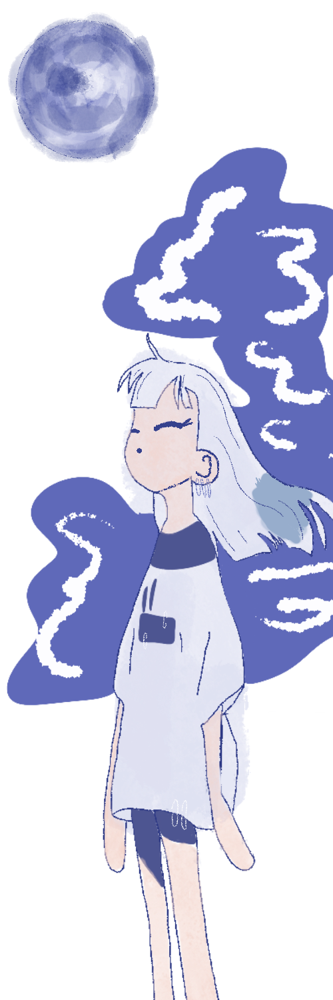

Déjà, moi, j’aimerais bien parler de quand on s’est rencontrés, parce qu’en fait, tout de suite il y a vraiment eu cette question de : « OK, moi, j’ai tout ça et je suis honnête de suite ». Et en fait, j’ai vraiment eu l’impression d’avoir le choix et de pouvoir me dire « est-ce que moi, je suis assez forte psychologiquement en ce moment pour dealer avec ça ou pas ? » Du coup, j’ai pu choisir, et déjà, ça, c’était incroyable. Il y avait au début un peu cette peur… fin c’était pas vraiment de la peur, mais c’était plus de l’incompréhension… Et en fait, vu que t’étais hyper open pour expliquer et qu’on a pu te poser plein de questions, ça s’est super bien passé. Et puis, au fur et à mesure j’ai rencontré les différents alters, j'ai appris à repérer comment ils sont quand ils frontent, et qu’est-ce que les différents alters aiment aussi. Ça donnait lieu à des situations qui étaient drôles, des fois un peu moins, mais il y a toujours eu beaucoup de bienveillance. Ça s’est toujours fait naturellement. J’ai toujours trouvé qu’il y avait beaucoup de compréhension et de bienveillance, et tu m’as vraiment éduquée là-dessus, et t’as pris le temps de répéter 40 000 fois les mêmes trucs avec beaucoup de patience, juste pour toi vivre mieux et pas pour imposer aux autres, et je trouve ça cool.
Moi, je pourrais être en relation avec quelqu’un qui a ce trouble-là, mais pour être très honnête sortir avec, c’est encore autre chose. Mais je pense que c’est aussi lié au fait que moi, je suis pas assez stable mentalement pour ça, et que, en fait, je trouverais ça injuste de dire : « OK, vas-y, viens, on sort ensemble » alors que je suis pas en capacité de dealer avec ça. Je pense que c’est… Je pense que c’est vraiment un truc où il faut être au clair avec soi, dans sa tête, ou pas, mais en tout cas, il faut être conscient de ce que ça implique.
Sinon, en anecdote… hum… Ah si ! Alors déjà, moi, j’ai fait la techno parade avec Klaus et c’était vraiment insane ! J’ai passé un super, super bon moment ! Et puis… et puis sinon bah… Je me souviens de Charlie, qui nous a dessinés aussi. C’était particulièrement beau de voir comment est-ce qu’on avait des attributs, chacun. Pour lui, c’est à la fois drôle et touchant de nous voir à travers ses yeux d’enfant. Et puis je me suis embrouillée avec Charlie aussi, il m’a traité de cacaboudin. Mais bon, on n’est plus en embrouille depuis, donc ça va ah ah c’était rien de grave. En fait, je crois que j’ai trop d’anecdotes ah ah. Par exemple, toute la question de la spiritualité, de la wicca, donc de la vision de la nature, du corps chez les sorcières… aussi, qui a été… Enfin, que moi, j’ai pu vachement aborder avec Arzel. J’ai vraiment appris énormément de choses et j’en ai vraiment des souvenirs de douceur. Sinon, j’ai des souvenirs de discussions très libérées avec Siam qui, moi, m’ont aidée à m’accepter aussi. Et donc, c’est des choses qui m’ont beaucoup, beaucoup touchée et qui m’ont fait grandir. Ça a beaucoup contribué à décomplexer mes activités sexuelles, la vision de mon corps, etc… Et je sais que je suis très reconnaissante, parce que ça a vraiment unlocké un truc chez moi qui était bloqué avant. Fin voilà, je vais m’arrêter pour les anecdotes, j’en ai beaucoup trop ah ah ah.
Pour la fin, je voulais remercier tous les alters, parce qu’un jour, l’un de vous m’a dit un truc hyper important : « Tu ne peux pas justifier ton comportement par ce qui se passe dans ta tête », et moi, c’est un truc que j’ai toujours admiré de zinzin chez toi. Genre… Enfin, je sais que t’as toujours été là en mode : « S’il y a un truc qui déconne, on me le dit ». Je me souviens de cette phrase où tu m’as dit que ce que tu as, ça ne justifie pas toutes tes actions et les effets qu’elles peuvent avoir sur les autres par ton trouble, et moi, je sais que ça m’a beaucoup marquée et que ça m’a fait beaucoup évoluer dans mes troubles. En tout cas, je sais que ça m’a vraiment permis d’être en confiance avec toi et en moi et de me dire : je peux le faire aussi, en fait. Et puis j’admire vraiment toute cette attention aussi que tu portes aux autres, alors que… alors que t’as déjà plein de monde dans ta tête. Enfin, moi, je sais que c’est quelque chose qui m’a vraiment touchée. Du coup, je te remercie pour ça.
